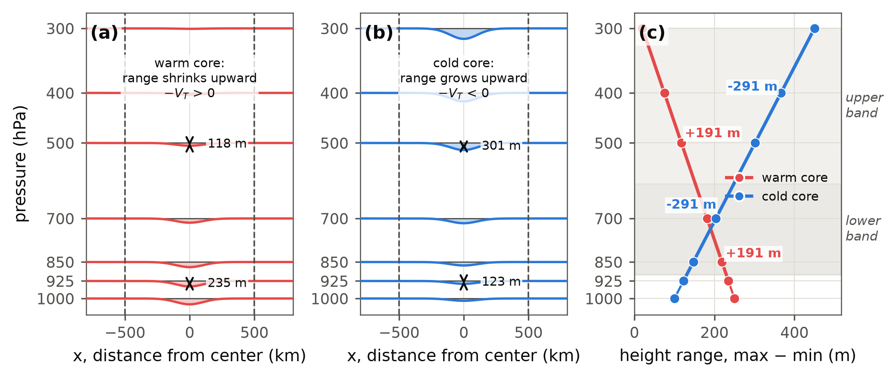
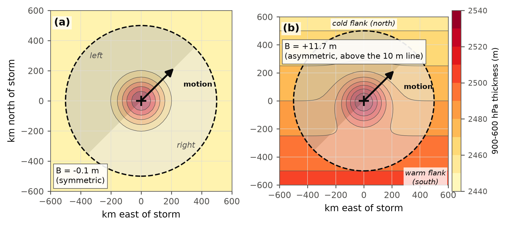
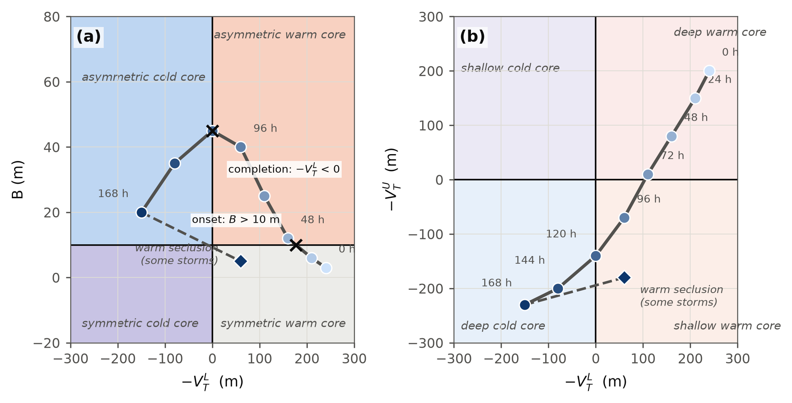
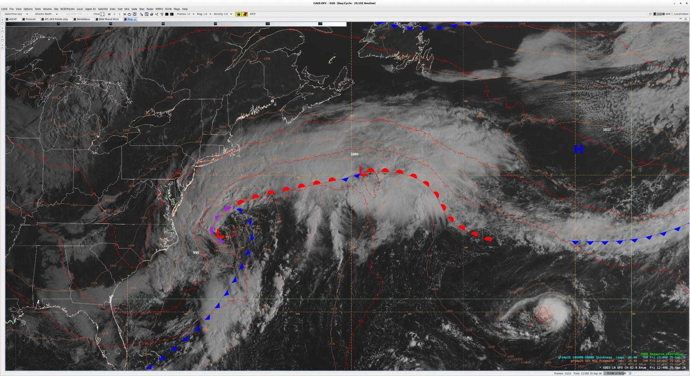
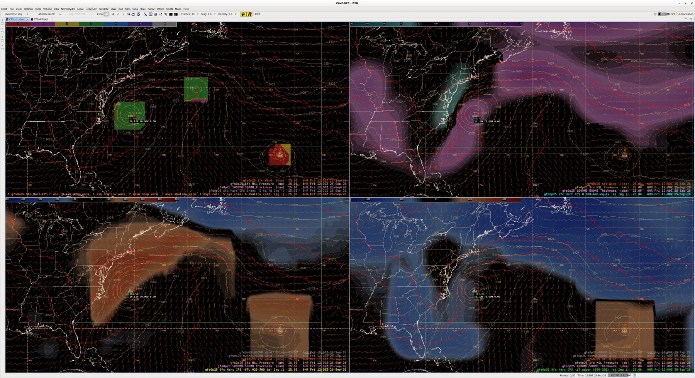

A plain-language guide to the gridded CPS products in AWIPS D2D
Jason Krekeler, NOAA/NWS Ocean Prediction Center · October 2026 · About a ten-minute read.
In one paragraph
Cyclone phase space answers one question about a low: what is it made of?
It reads three numbers off the model, two that say whether the core is
warmer or colder than its surroundings in the lower and in the upper
troposphere, and one that says whether warm and cold air sit on
opposite sides of the low, which is what a front looks like to the
model. Those three numbers sort every low into one of seven classes:
hurricane, subtropical storm, storm in transition, extratropical low,
occluded low, and two in-between cases. The products in D2D compute
the numbers at every grid point of every model, so every closed low on
the chart carries its class on every frame, with no tracker and no
advisory required. Use them to type a low before you draw fronts
through it, to time a tropical cyclone's transition, and to decide
whether a low is still a tropical system, a hybrid, or an extratropical
low that merely used to be one.
1. The three numbers
Everything on these maps comes from three quantities, each evaluated
inside a 500 km circle around a point and each in metres. They are the
quantities Robert Hart defined in 2003, and the FSU cyclone phase pages
you may already use plot the same three for tracked storms.
Lower thermal wind, −VTL (HVTL)
Is the core warmer or colder than its surroundings between 925 and
700 hPa? Positive is warm, negative is cold. A hurricane reads a few
hundred metres warm; a mature extratropical low a hundred or more cold.
Upper thermal wind, −VTU (HVTU)
The same question between 500 and 300 hPa. A deep warm core
(hurricane) is warm in both layers. A subtropical storm or a warm
seclusion is warm below and cold above.
Thermal asymmetry, B (HB)
Is there warm air on one side of the low's motion and cold air on
the other? Below 10 m the low is symmetric, a vortex sitting in air of
one temperature. Above 10 m it is asymmetric: it has a frontal
structure. Hart's word for frontal is asymmetric.

The thermal wind terms. Picture a cross-section
through a low. Each pressure surface dips over the centre. In a warm core
the dip shrinks with height (the warm column is thick, so the upper
surfaces are nearly flat); in a cold core the dip grows with height. The
lower term measures that change between 925 and 700 hPa, the upper term
between 500 and 300 hPa. Warm is positive.

The asymmetry term. Split the 500 km circle
along the low's direction of motion and compare the 900 to 600 hPa
thickness on the right half with the left half. A warm sector to the
right and cold air to the left is a front, and B is large. A vortex in
uniform air gives B near zero. The direction of motion comes from the
model's own deep-layer steering flow, which is the one weak spot of the
method (see section 6).
2. The seven classes
Three numbers, each on one side of a line (10 m for B, zero for the two
thermal winds), give eight boxes. One pair is merged, leaving seven
classes. The class map in D2D is simply which box the low's centre falls
in.
Code
Name
B
Lower
Upper
What it usually is
0
symmetric deep warm core
≤ 10
warm
warm
hurricane, typhoon
1
symmetric shallow warm core
≤ 10
warm
cold
subtropical storm, or a warm seclusion
2
asymmetric deep warm core
> 10
warm
warm
hurricane meeting a trough; transition beginning
3
asymmetric shallow warm core
> 10
warm
cold
transition under way; coastal hybrid lows
4
asymmetric cold core
> 10
cold
cold
ordinary extratropical low; transition complete
5
symmetric cold core
≤ 10
cold
cold
occluded or cut-off cold low
6
shallow cold core
any
cold
warm
rare; a mid-level perturbation
blank
not a closed low (no 5 hPa ring), below ground, or the steering flow too weak to define B
The colours are grouped so the big events jump out: reds for a symmetric
warm core, yellow and green for a storm in transition, blues for a cold
core. A classic extratropical transition walks 0, 2, 3, 4. A warm
seclusion re-forms a shallow warm core after the transition and walks
back from 4 to 3, or to 1 once the bent-back front wraps up and B falls.

Hart's two diagrams. These are the plots on the
FSU pages. The left diagram is B against the lower thermal wind, with the
10 m onset line; the right is upper against lower thermal wind. The
quadrant names are the class names above. The live map draws these two
diagrams for every tracked low, and a 3-D view of all three numbers at
once.
3. Reading the maps in D2D
Load HCPSclass as an image with MSLP contours. Three things
to know about what you see:
A coloured blob appears only at a closed low. The
detector needs a 5 hPa closed ring in MSLP; the blob extends 200 km
around the centre so it is easy to see. The colour is the class at the
low's pressure minimum. If a low you can see has no blob, it is not
closed by 5 hPa in that model at that hour.
The thermal wind and B maps are computed everywhere, but only
mean something at a low. Away from lows they show the ambient
thermal ridge and trough (a blue swath along the polar front, red over
the subtropical ridge). Read them at the low's centre, and treat the
rest as context. The live web map fades them away from the lows for
this reason.
Blanks are information. The lower term goes blank
over high terrain (925 hPa is below ground); B goes blank where the
steering flow is under 2 m/s. A blank is not zero.
The four-panel layout that works on shift: class with 1000 to 850 hPa
thickness, HVTL with 850 hPa temperature, HVTU with 300 hPa wind, HB with
thickness.
4. A real case: the coastal low of 25 September 2026

The drawn analysis against GOES-19 visible, 7 h of the 06 UTC GFS.

The CPS four-panel at 6 h: class, HB, HVTL, HVTU.
At the low's centre the lower thermal wind read +170 m, the upper
−112 m and B +43 m: class 3, an asymmetric shallow warm core. In
words, a frontal low with a warm lower core and a cold upper core, which
is a hybrid, not a tropical system and not yet an ordinary extratropical
low either.
That reading settles the front geometry. B of 43 m with the lower term
still strongly warm means the warm sector reaches the centre, so the warm
front is drawn running into the low and the occlusion, if any, stays
short. The HB map splits right at the low, teal to the northwest where
northerly flow puts cold land on its right, magenta to the east along the
warm front, which places the triple point at the low. Behind the low the
cold front is supported near the coast by matching HB and HVTL contrast,
but from about 33N to 28N offshore the fields show no contrast across the
drawn line: that stretch is a trough or a spent front, not a solid line.
What to watch next tells you which way the analysis should go. If B at
the centre falls toward 10 m while the lower term stays warm, the low is
secluding (class 3 to 1) and a bent-back warm front follows. If B holds
high, it stays an open wave on the front and the geometry is kept. In
this case the 12 UTC run that day took it to class 1 briefly and then
cold (4) as it drifted north, which is the seclusion path.
5. Where it earns its keep
Timing a transition. Onset is the first frame B
crosses 10 m; completion is the first frame the lower term turns
negative. Read the crossings from the HB and HVTL maps or the live map's
diagrams, not from the colour changing, because a storm can jump 0 to 4
in one frame if both lines are crossed at once.
The post-tropical handoff. Class 4 with a cold lower
core is an extratropical low whatever its history; class 2 or 3 is a
system still carrying its warm core into the westerlies, with the wind
field to match.
Typing a low before drawing fronts. Symmetric (B
under 10 m) says no front through the centre. Asymmetric says a front,
and the HB sign pattern around the low says where the warm sector is.
Subtropical and hybrid lows. Class 1 off the
southeast coast or over the Gulf is the model saying shallow warm core
and no front: the structure of a subtropical storm, worth a second look
at the wind field and convection.
Every low on every model. GFS and ECMWF side by side,
and the lows nobody is writing advisories on.
6. Where it misleads
Stalled and looping lows. B needs a direction of
motion, and the products take it from the model's steering flow. A low
drifting against or across its steering flow can read 10 to 20 m too
asymmetric, enough to change its class. When a low is nearly
stationary, trust the two thermal winds and your own thickness
overlay over B.
Warm cores read a little strong. These products use
the standard levels (925, 850, 700 and 500, 400, 300 hPa); FSU uses
every 50 hPa. On a deep warm core the lower term reads about 15 to 25
percent higher than the FSU page. Cold cores agree with FSU to within
about 20 m. The class is unaffected; the numbers are not interchangeable
with FSU's.
A class is a state, not an event. Two adjacent frames
can straddle a line by a metre. Look at the trend over several hours and
at the numbers, not the colour alone.
Terrain. Near the Rockies, Greenland or the Andes the
lower term is blank or thin and the class may be missing. Nothing is
wrong; there is no 925 hPa air there.
The low must be closed. An open wave or a trough gets
no class. That is by design, and it means a weak coastal low may appear
and disappear between frames as the model closes and opens it.
It is the model's storm. Everything here is the
model's structure. A model with the wrong intensity or track gives the
right class for the wrong storm.
7. The five-second checklist
Is there a blob? If not, the low is not closed by 5 hPa.
What colour, and is it changing frame to frame? Red or magenta: no
front through the centre. Yellow or green: warm core with a front,
transition under way. Blue or indigo: cold core.
Where does HB change sign around the low? That is where the warm
sector is, and the triple point.
Is the low moving with its steering flow? If not, discount B.
Does the thickness overlay agree? Closed contours around the low
mean symmetric; a tight gradient across it means asymmetric.